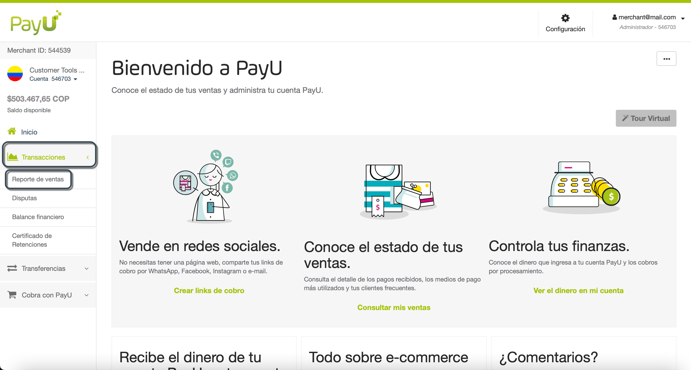
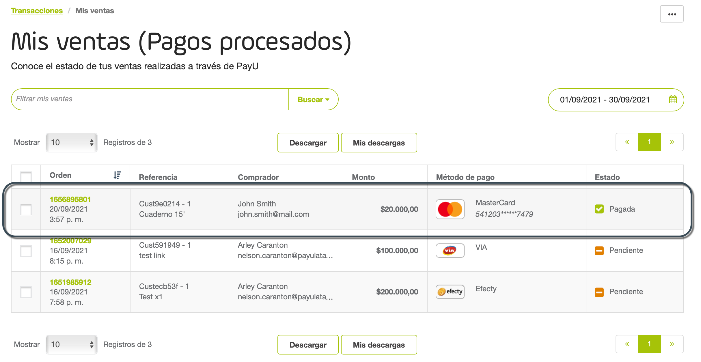
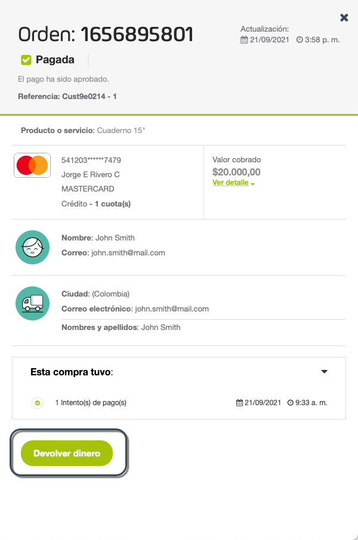
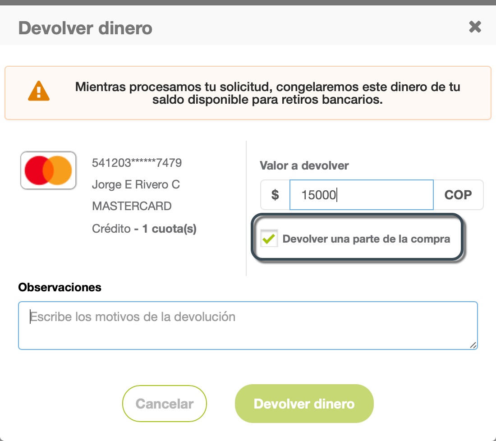
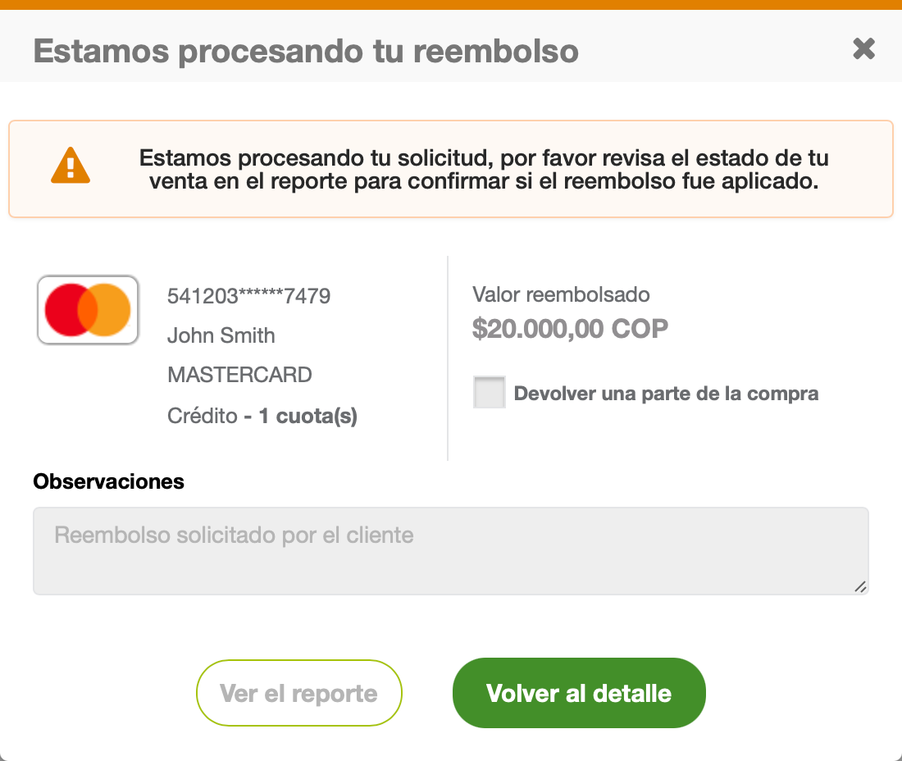
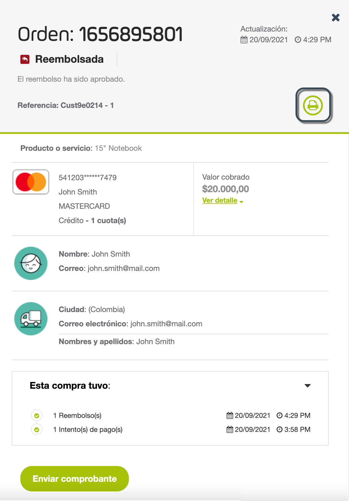
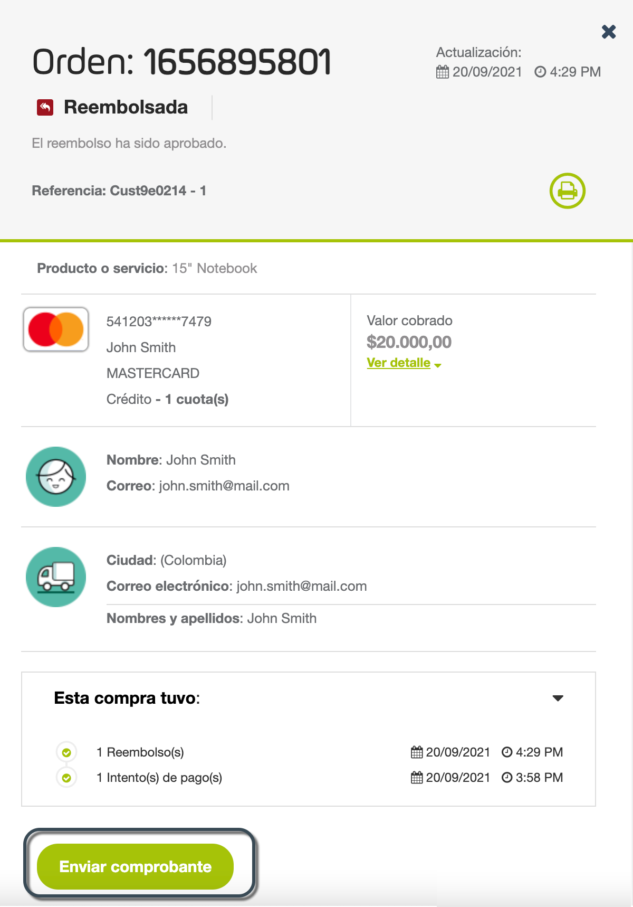

Reembolsos
Nota
Si realizas un reembolso a través de este panel, este solo se actualiza en el Módulo PayU. Si necesitas controlar y registrar los reembolsos en tu sistema, debes utilizar el API de Reembolsos.¿Qué es un reembolso?
Un reembolso es la acción para devolver voluntariamente el dinero pagado por un cliente cuando ocurre alguna de las siguientes situaciones:
- El producto o servicio entregado no cumplió con las expectativas del cliente y lo devolvió.
- El producto está agotado, y el comerciante no puede entregar el producto al cliente.
Procedimiento de reembolso
Los reembolsos están sujetos a revisión y aprobación de nuestro equipo. El procedimiento para solicitar reembolsos se explica a continuación:
-
Cuando tu cliente solicita un reembolso, debes solicitarlo utilizando el módulo PayU. Solo necesitas encontrar el pedido y entregar una razón para el reembolso.
-
Una vez enviada la solicitud, PayU la revisa y esta es aprobada o rechazada en uno a tres días hábiles.
Estados de reembolso
Un reembolso puede estar en uno de los siguientes tres estados:
- En progreso: la solicitud ha sido enviada a PayU para su aprobación y está en proceso de aprobación.
- Aprobado: la solicitud ha sido aprobada por un agente de servicio al cliente de PayU.
- Declinado: la solicitud no cumple con las políticas definidas por PayU y fue rechazada por un agente.
Permisos requeridos
Para tener acceso a este módulo, necesitas un perfil con los siguientes permisos activos:
- Reembolsos y Contracargos > Listar Reembolsos
- Reembolsos y Contracargos > Administrar Reembolsos
Este permiso te permite realizar reembolsos.
Consulta Perfiles y Permisos para más información.
Consideraciones
- Los Reembolsos solo están disponibles para transacciones realizadas con tarjeta de crédito.
- Puedes reintentar la solicitud de reembolso si fue rechazada previamente.
- Una vez hagas la solicitud, el monto de la transacción se convierte en parte del Saldo Congelado de tu cuenta de PayU hasta que sea procesado.
- En Chile:
- No se soportan reembolsos para transacciones procesadas con WebPay Plus.
- Para transacciones con tarjetas prepago que no sean procesadas a través de WebPay Plus, los Reembolsos solicitados luego de la primero hora del cobro pueden ser aprobados o rechazados por la red financiera. Luego de esta hora, se rechazan todos los reembolsos para transacciones realizadas con tarjetas prepago.
- ISi se rechaza el reembolso, PayU muestra el código de error generado por la red.
- Los reembolsos parciales para transacciones que utilizan cuotas se reciben en línea pero son procesados de forma manual debido a restricciones de la red adquirente.
- En Colombia, no se soportan reembolsos parciales para tarjetas de crédito internacionales.
- En Perú, se soportan reembolsos parciales para transacciones sin cuotas. Ten en cuenta que las transacciones en una cuota son consideradas como sin cuotas.
- Si tu solicitud de reembolso es aprobada, el monto es retornado al tarjetahabiente.
- Si tu solicitud de reembolso es declinada, el monto se libera del Saldo Congelado y retorna a tu cuenta de PayU.
- Una vez se apruebe el reembolso, este será reflejado en la tarjeta de crédito del pagador cuando el banco lo haga efectivo.
- Para verificar el estado de tu solicitud de reembolso, puedes consultarla haciendo clic en la venta en el Módulo PayU.
Reembolsos por país
Ten en cuenta las siguientes consideraciones por país antes de solicitar reembolsos.
| Tiempo para enviar el reembolso | Monto mínimo | ¿Cuánto tiempo tardará el cliente en recuperar el dinero? | ¿Acepta reembolsos parciales? | |||
|---|---|---|---|---|---|---|
| Mín. | Max. | Mín. | Max. | |||
 |
10 minutos |
|
- | 1 día hábil | 30 días hábiles | ✓ |
 |
|
90 o 120 días* | - | 1 día hábil | 15 días hábiles | ✓ |
 |
10 minutos | 90 días | 10 CLP | 8 días hábiles | 20 días hábiles | ✓ |
 |
10 minutos | 2 años | 100 COP | 1 día hábil | 30 días hábiles | ✓ |
 |
10 minutos | 45 o 180 días* | - | 1 día hábil | 30 días hábiles | ✓ |
 |
10 minutos | 180 días | - | 1 día hábil | 8 días hábiles | X |
 |
10 minutos | 180 días |
|
15 días hábiles | 25 días hábiles | ✓ |
¿Cómo solicitar un reembolso?
Para solicitar un reembolso, la transacción debe estar aprobada y sin ningún proceso de disputa pendiente. Sigue estos pasos para solicitarlo.
- Inicia sesión en ru cuenta PayU. En el menú de la izquierda, expande el menú Transacciones y selecciona Reporte de ventas.

- Se abre el Reporte de ventas. Localiza la transacción que quieres reembolsar y haz clic en ella.

- Aparecen los detalles de la transacción a la derecha de la ventana. Haz clic en el botón Devolver dinero al final del panel.

- Si necesitas solicitar un reembolso parcial, marca la opción Devolver una parte de la compra e ingresa el valor solicitado.

- Ingresa la razón para solicitar el reembolso (parcial o total) y haz clic en Devolver dinero.

- Aparece el resumen de la solicitud. Mientras PayU procesa el reembolso, el monto del reembolso se congela en tu cuenta. Si se aprueba la solicitud, el monto reembolsado se devuelve al cliente a través del método de pago utilizado.

- Una vez aprobada la solicitud, el estado aparece en la venta.

Obtener la confirmación del reembolso
Cuando el reembolso haya sido aprobado, puedes generar un recibo o enviar el comprobante al pagador. Para esto, sigue las instrucciones dependiendo de la operación que quieras realizar.
Generar el recibo del reembolso
Para generar el recibo del reembolso, encuentra la venta reembolsada y haz clic en el botón de impresora ubicado en la esquina superior derecha del panel de detalles de la transacción.

Se abren las opciones de impresión de tu navegador, aquí puedes imprimirlo físicamente o guardarlo en formato PDF. La siguiente imagen corresponde a las opciones de impresión de Google Chrome.

Advertencia
La opción Guardar como PDF depende de tu navegador. Si tu navegador no soporta esta opción, solo podrás imprimirlo utilizando una impresora.Enviar el comprobante del reembolso al pagador
Junto con la funcionalidad de impresión, también puedes enviar un correo de confirmación al pagador informando el resultado del reembolso. Esta opción se encuentra en la sección Acciones al final del panel de detalles de la transacción.

Una vez haces clic en este botón, el pagador recibe un correo electrónico con los detalles del reembolso.